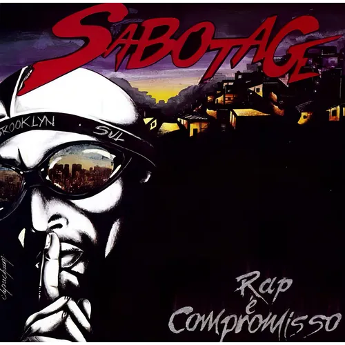

Sabotage uniu lírica afiada, carisma raro e uma estética que nasceu da vivência. Seu trabalho transformou experiência real em arte popular, sem perder peso nem humanidade.
Brooklin, São Paulo - rap, cinema e consciência
Uma presenca que ainda dita o tom da rua.
Sabotage segue atual porque nunca soou artificial. Sua voz, sua historia e seu olhar sobre a periferia continuam influenciando a musica, a moda, o audiovisual e a cultura urbana.
Legado
Uma identidade forte, cinematográfica e impossível de confundir.

01
álbum clássico que virou referência definitiva no hip hop brasileiro.
02
linguagens dominadas com naturalidade: música e cinema.
100%
autenticidade na forma de contar a quebrada sem filtro.
Trajetória
Uma caminhada curta no tempo e gigante em influencia.
Voz moldada na rua
A vivência no Brooklin atravessa o jeito de escrever, rimar e se posicionar.
"Rap é compromisso!" entra para a história
O disco consolida um som cru, sofisticado e profundamente brasileiro.
Presença magnética nas telas
Seu carisma natural expande a imagem do artista para além da música.
Influência viva
Continua inspirando novas gerações de MCs, produtores, designers e cineastas.
Discografia e destaques
Faixas e momentos que sustentam o tamanho do legado.

Álbum essencial
Rap é compromisso! (2000)
Um clássico absoluto: mistura flow singular, narrativa social, humor, tensão e humanidade em um recorte único do rap brasileiro.

Faixas
Um Bom Lugar
Visao afetiva e potente sobre territorio, sobrevivencia e sonho.

Faixas
No Brooklin
Retrato direto da quebrada com vocabulario, ritmo e personalidade proprios.

Feats
Colaborações marcantes
Participações que elevavam qualquer som pela presença vocal e pela identidade imediata.
Impacto cultural
Mais que rapper: símbolo de imaginário, linguagem e atitude.
Sabotage permanece relevante porque representa uma verdade estética e humana. Sua imagem continua forte em editoriais, documentários, playlists, murais e referências visuais da cultura urbana.

Spotify